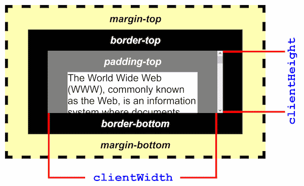

{{APIRef(“DOM”)}}
The Element.clientWidth property is zero for inline elements and elements with no CSS; otherwise, it’s the inner width of an element in pixels. It includes padding but excludes borders, margins, and vertical scrollbars (if present).
When clientWidth is used on the root element (the <html> element), (or on <body> if the document is in quirks mode), the viewport’s width (excluding any scrollbar) is returned. This is a special case of clientWidth.
Note: This property will round the value to an integer. If you need a fractional value, use {{ domxref(“element.getBoundingClientRect()”) }}.
intElemClientWidth is an integer corresponding to the clientWidth of element in pixels. The clientWidth property is read–only.

{{Specifications}}
clientWidth was first introduced in the MS IE DHTML object model.
{{Compat}}